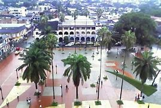
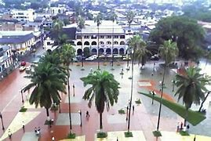
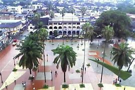

Florencia es un municipio colombiano, capital del departamento de Caquetá. Es el municipio más poblado de la región amazónica por su número de habitantes.5 Es conocido como «La Puerta de Oro de la Amazonía Colombiana».6 La cabecera municipal homónima es una ciudad joven, punto de convergencia de los municipios del norte y del sur del Caquetá. Está ubicada en la zona de piedemonte entre la Cordillera Oriental y la Amazonia, en la margen derecha del río Hacha, lo cual le da una posición privilegiada ambientalmente al ser el enlace entre la Región Andina y la Región Amazónica. Dista 519 km de la ciudad de Bogotá, capital de Colombia.7 Cuenta con 163 323 habitantes de acuerdo con la proyección del DANE para 2012.2 Su extensión territorial es de 2292 km², su altitud media es de 242 msnm, su precipitación media anual es de 3840 mm y su temperatura promedio es de 25 °C.8 Está constituida por cuatro comunas en su área urbana y siete corregimientos en su área rural.5 Cuenta con acceso terrestre al resto del país por medio de la carretera Florencia-Suaza-Altamira (Carretera Nacional 20) y es punto intermedio en la Troncal de la Selva. El transporte aéreo se realiza a través del aeropuerto Gustavo Artunduaga para operaciones comerciales y del aeropuerto Larandia para operaciones militares. Su actividad económica está ligada principalmente a la ganadería, el comercio y la agricultura, así como a los servicios de turismo ecológico.9 El territorio que ocupa Florencia fue poblado a mediados del siglo XIX por colonos atraídos por la bonanza de la quina y posteriormente del caucho. La ciudad fue fundada oficialmente el 25 de diciembre de 1902 por el padre Doroteo de Pupiales, a partir de una bodega de caucheros ubicada a orillas de la quebrada La Perdiz.10 Fue erigida en municipio mediante Decreto No. 642 del 17 de junio de 1912 y desde entonces ostenta el título de capital del Caquetá.11 Como capital del departamento, Florencia alberga las sedes de la Gobernación de Caquetá, la Asamblea Departamental, el Tribunal Departamental, la Fiscalía General, la Contraloría Departamental, la Procuraduría Regional, la Dirección de Impuestos y Aduanas Nacionales y otras instituciones y organismos del Estado, así como la Universidad de la Amazonia, la Caja de Compensación Familiar del Caquetá, la Compañía de Ferias y Mataderos del Caquetá y la Cámara de Comercio de Florencia para el Caquetá. Es sede episcopal de la Arquidiócesis de Florencia.
